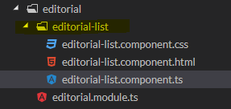
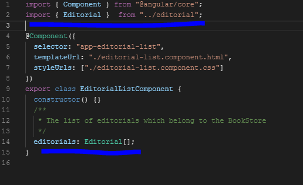

Para poder realizar este taller ud debe haber leído los conceptos básicos sobre angular en el libro del curso. Tener claro:
En este ejemplo vamos a crear una aplicación Angular con un componente para mostrar una Lista de alguno de los recursos de su aplicación. Para esto vamos a definir, además del módulo principal, un módulo funcional llamado XYZModule, donde XYZ es el recurso que Ud. ha seleccionado para el taller. Este módulo tendrá un componente que se ocupa de listar los recursos xyz.
Introducción
Contenido
Crear el proyecto y el módulo de listar
Paso 1: Crear el proyecto
Paso 2: Crear el módulo
Paso 3: Asociar el nuevo módulo en la aplicación principal.
Crear el componente de listar
Paso 1: Crear el componente dentro del módulo
Paso 2: Asociar el componente con el módulo
Llamar el componente de listar
Paso 1: Desplegar "editorial-list works"
Crear la vista del componente Listar
Paso 1: Crear la tabla
Paso 2: Declarar el atributo que contiene los elementos
Paso 2: Declarar la interface del tipo de los elementos
Paso 3: Importar la interface del tipo de los elementos en el componente
Paso 4: Iterar sobre la lista en la vista del componente
Crear un servicio para obtener los datos
Paso 1: Crear el servicio
Paso 2: Invocar el servicio
Ingrese, con su cuenta de github, a https://stackblitz.com y cree un nuevo proyecto Angular.
Renombre el proyecto con el nombre listar-xyz, donde xyz es el nombre del recurso de su proyecto que Ud. ha seleccionado para este taller. En este ejemplo nuestro recurso Xyz es Editorial.
Este ejercicio se va a realizar sobre su proyecto front. Instrucciones aquí
Seleccione un recurso de su proyecto para este taller. En este ejemplo nuestro recurso Xyz es Editorial.
Sobre la carpeta app de su proyecto seleccione la opción de Angular Generator (angular-cli) y allí módulo:
Defina el nombre de su módulo. Por ejemplo xyz si su recurso es el recurso Xyz.
Vaya al archivo app.module.ts y agregue el nuevo módulo. Debe hacer dos cosas: 1) Importar utilizando el nombre de la clase del nuevo módulo y asociarlo con el archivo físico. Asegúrese de escribir correctamente la ruta del archivo físico. 2) Incluir en el atributo imports del decorador del módulo, el nombre del módulo nuevo.
Vaya a la carpeta del módulo xyz (editorial), click derecho Angular Generator/Componente
Dele el nombre xyz-list (editorial-list). Verifique que se crearon tres archivos dentro de una carpeta nueva xyz-list dentro de la carpeta del módulo xyz.

Angular-cli crea la declaración del componente en el módulo. Sin embargo, se debe agregar una línea con el atributo exports para que este componente se pueda ver desde la aplicación principal .
Abra el archivo de la vista del componente de listar "editorial-list.component.html. Allí se encuentra lo que queremos que se despliegue en la página principal.
Para lograrlo:
La vista del componente, es decir el código html, va en el archivo "editorial-list.component.html".
Defina una tabla básica en html como la que se presenta a continuación:
<div class="container-fluid">
<div class="col-md-2">
<table class="table table-striped">
<thead class="thead-dark">
<tr>
<th>Editorial Name</th>
</tr>
</thead>
<tbody>
<tr>
<td></td>
</tr>
</tbody>
</table>
</div>
No olvide definir en el archivo styles.css:
@import '~bootstrap/dist/css/bootstrap.min.css';
y agregar la dependencia de bootstrap al proyecto.
Declare un atributo en la clase del componente de xyz.list.component.ts que contendrá la lista de los elementos que queremos desplegar.
En nuestro ejemplo:
/**
* The list of editorials which belong to the BookStore
*/ editorials: Editorial[];
El tipo de dato Editorial se debe definir. En su proyecto, defina el tipo de dato específico para su recurso.
Esta es una clase typescript que se llamara Editorial.
La interface tiene los atributos del DTO:
export interface Editorial {
/**
* The editorial's id
*/
id: number;
/**
* The editorial's name
*/
name: string;
}

Para mostrar los valores de la colección, cuando los tenga, se debe crear un ciclo en la tabla para iterar por cada elemento en la colección y crear un valor en la tabla. Así:
<div class="container-fluid">
<div class="col-md-2">
<table class="table table-striped">
<thead class="thead-dark">
<tr>
<th>Editorial Name</th>
</tr>
</thead>
<tbody>
<tr *ngFor = "let e of editorials">
<td>{{e.name}}</td>
</tr>
</tbody>
</table>
</div>
Para probar que va bien hasta ahi, dele unos valores a la colección:
editorials: Editorial[] =[{name:"Siruela"}, {name:"Planeta"}];
debe verse:
Utilizando el Angular Generator cree , en el módulo editorial un servicio y llámelo xyz (en nuestro ejemplo editorial). El generador completa el nombre y el archivo queda: editorial.service.ts
Abra el archivo que creó y note que el servicio es una clase typescript.
Esta clase contendrá la lógica del componente, es decir, los métodos para traer los valores (GET), crear valores (POST), etc. Por ahora vamos a hacer un método para traer la lista de los recursos (en nuestro ejemplo, la lista de las editoriales).
Estos métodos los vamos a implementar utilizando una librería de angular llamada HttpClient.
En la clase del servicio definimos el método:
import { Injectable } from '@angular/core';
import { HttpClient } from '@angular/common/http';
import { Editorial } from './editorial';
import { Observable } from 'rxjs';
const API_URL = '';
const editorials = '';
@Injectable()
export class EditorialService {
/**
* Constructor of the service
* @param http The HttpClient - This is necessary in order to perform requests
*/
constructor(private http: HttpClient) { }
getEditorials() : Observable<Editorial[]> {
return this.http.get<Editorial[]>(API_URL + editorials);
}
}
Para facilitar probar nuestra aplicación, sin llamar aun al back, vamos a crear un archivo local con los datos editorials.json que debería devolver el back. Este archivo lo vamos a crear en una carpeta llamada assets, dentro de src:
El contenido del archivo es:
[{
"id": 1,
"name": "Oveja Negra"
}, {
"id": 2,
"name": "Siruela"
},
{
"id": 3,
"name": "Plaza y Janes"
},
{
"id": 4,
"name": "Norma"
}]
las variables para localizar este archivo son:
const API_URL = "../../assets/";
const editorials = 'editorials.json';
El servicio se invoca desde el componente listar. debemos definir en la clase del componente listar un método que llame al servicio:
editorials: Editorial[];
getEditorials(): void {
this.editorialService.getEditorials().subscribe(editorials => this.editorials = editorials);
}
Paso 3: Inicializar el componente
El método getEditorials() se debe llamar a la creación del componente. Para esto, la clase del componente debe implementar una interface OnInit que define un método de inicialización ngInit. El código completo es:
import { Component, OnInit } from '@angular/core';
import { Editorial } from '../editorial';
import { EditorialService } from '../editorial.service';
/**
* The component for the list of editorials in the BookStore
*/
@Component({
selector: 'list-editorial',
templateUrl: './editorial-list.component.html',
})
export class EditorialListComponent implements OnInit {
/**
* Constructor for the component
* @param editorialService The author's services provider
*/
constructor(private editorialService: EditorialService) { }
/**
* The list of editorials which belong to the BookStore
*/
editorials: Editorial[];
/**
* Asks the service to update the list of editorials
*/
getEditorials(): void {
this.editorialService.getEditorials().subscribe(editorials => this.editorials = editorials);
}
/**
* This will initialize the component by retrieving the list of editorials from the service
* This method will be called when the component is created
*/
ngOnInit() {
this.getEditorials();
}
}
Para que todo funcione se requiere actualizar el archivo App.module.ts. Para eso importe el módulo HttpClientModule e inclúyalo en la declaración de los imports.